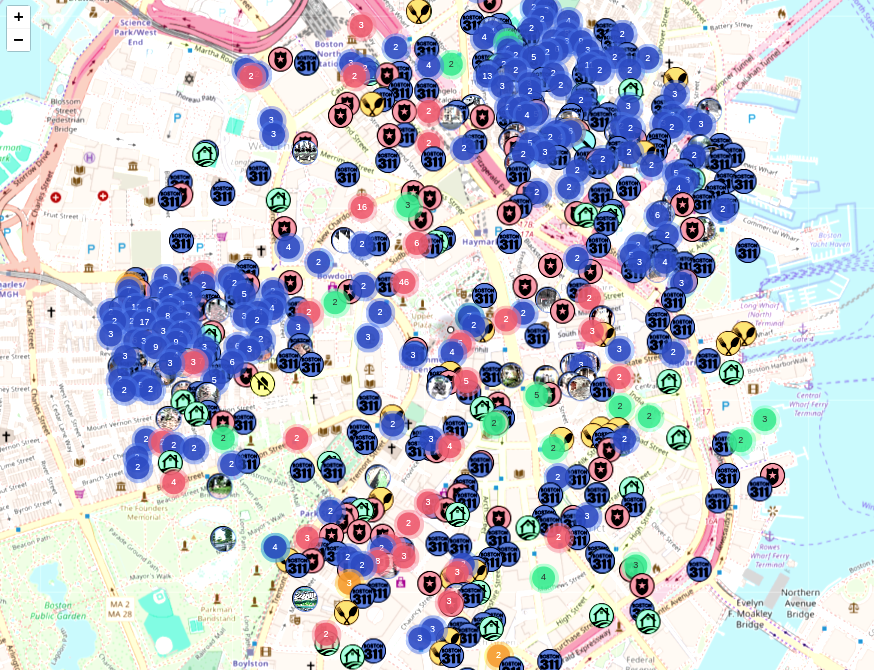

BostonScope: Your City, Unveiled.
BostonScope provides comprehensive, up-to-date information on happenings in your neighborhood and across the city. From safety alerts to development news, stay informed with our powerful mapping and data tools.
- Interactive Maps & Data Visualization
- Natural Language Queries
- Customizable Date & Type Filters
- Saved Locations & Personalized Views
- Detailed Data Metrics & History
- Multi-Lingual Support

Discover Boston like never before!
Stay Aware: Crime Data & Safety Insights
Access detailed crime reports, see incident locations on an interactive map, and filter by date or type. BostonScope helps you understand safety trends in your areas of interest.